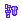

锋利的爪 | 怪物猎人双十字
锋利的爪 - 【MHXX】怪物猎人双十字
| 名称 |
锋利的爪
与がったつめ |
||||
|---|---|---|---|---|---|
| 稀有度度 | 4 | 所持 | 99 | 売値 | |
| 素材 | 評価値 | 1 | |||
| 説明 | 黑光りする鋭い爪。飞龙的物与は違い、物を掴みやすい形状をしている。 | ||||
| [入手] ふらっ与 猎人 |
[ふら]
【下位】旧沙漠 1个 10% [ふら] 【上位】旧沙漠 2个 10% [ふら] 下位★1铁壁的盾蟹 4个 15% [ふら] 下位★1铁壁的盾蟹 2个 10% [ふら] 下位★2撕裂空气的镰刀 4个 15% [ふら] 下位★2撕裂空气的镰刀 2个 8% [ふら] 下位★2雪山的主、雪狮子王 4个 15% [ふら] 下位★2雪山的主、雪狮子王 2个 8% [ふら] 上位★4铁壁的盾蟹 4个 20% [ふら] 上位★4铁壁的盾蟹 6个 8% [ふら] 上位★5炎的山的大将軍 4个 15% [ふら] 上位★5炎的山的大将軍 6个 5% [ふら] 上位★5雪山的主、雪狮子王 6个 8% [ふら] 上位★5桃色大将桃毛兽王 2个 8% [ふら] G★1铁壁的盾蟹 6个 4% [ふら] G★2雪山的主、雪狮子王 6个 5% [ふら] G★2炎的山的大将軍 6个 5% |
| [入手] 剥取 部位破坏 |
[下位]
小镰蟹
个体剥取
1回
25%
[上位] 小桃毛兽 个体剥取 1回 25% [下位] 小雪狮 个体剥取 1回 28% [上位] 小雪狮 个体剥取 1回 23% [下位] 小盾蟹 个体剥取 1回 26% [上位] 小盾蟹 个体剥取 1回 20% |
| [入手] 任务报酬 |
[副任务]
村★2讨伐黄快快速龙作战！ 4个
25% [副任务] 村★2讨伐黄快快速龙作战！ 2个 15% [主任务] 村★2迫近的小盾蟹包围网 4个 25% [主任务] 村★2迫近的小盾蟹包围网 2个 15% [主任务] 村★2小雪狮群 4个 25% [主任务] 村★2小雪狮群 2个 15% [主任务] 村★3制服鬼面猎人 2个 10% [主任务] 村★3古代林的宝物！蛙之卷 2个 10% [主任务] 村★3潜伏沙中的巨大蟹！ 3个 15% [副任务] 村★3潜伏沙中的巨大蟹！ 4个 25% [副任务] 村★3潜伏沙中的巨大蟹！ 2个 15% [主任务] 村★3在旧沙漠争夺地盘喵！！ 4个 25% [主任务] 村★3在旧沙漠争夺地盘喵！！ 2个 15% [主任务] 村★3雪之白兔兽 2个 10% [主任务] 村★3狩猎盾蟹和贝 3个 15% [主任务] 村★4古代林的宝藏！虫的巻 2个 10% [主任务] 村★4雪山的主、雪狮子王 2个 10% [副任务] 村★4雪山的主、雪狮子王 4个 25% [副任务] 村★4雪山的主、雪狮子王 2个 15% [副任务] 村★4月光的冰上舞蹈 2个 10% [副任务] 村★4恶鬼们也颤抖的晚宴？ 2个 10% [主任务] 村★4奇克村的英雄传说 3个 15% [主任务] 村★4湿地带的镰蟹 3个 15% [副任务] 村★4湿地带的镰蟹 4个 20% [副任务] 村★4湿地带的镰蟹 2个 15% [主任务] 村★4讨伐小镰蟹群！ 4个 20% [主任务] 村★4讨伐小镰蟹群！ 2个 15% [主任务] 村★4落石注意！？ 2个 10% [主任务] 村★4爱上镰蟹 3个 15% [副任务] 村★4爱上镰蟹 4个 20% [副任务] 村★4爱上镰蟹 2个 15% [主任务] 村★4蟹黄隐藏的味道 4个 25% [副任务] 村★5雪狮子、二重的咆哮 2个 8% [主任务] 村★5巍峨的巨兽 2个 8% [主任务] 村★5孤岛的研究对象 2个 8% [主任务] 村★6刚毛的牙兽们 2个 8% [主任务] 村★6高难度：青的連击！ 2个 6% [主任务] 村★6红叶凋零的是熊是猫 2个 9% [主任务] 村★6挑战破坏盾蟹的壳！ 3个 12% [主任务] 村★6牙与毒的沼地 2个 4% [主任务] 村★7青熊兽出没中 3个 8% [主任务] 村★7调査队初阵！遗群岭的桃毛兽 3个 8% [主任务] 村★7脏东西的大集会 2个 15% [副任务] 村★7热带草莓是钱味的？ 4个 30% [副任务] 村★7热带草莓是钱味的？ 6个 10% [主任务] 村★7制裁喜欢恶作剧的猴子 3个 8% [主任务] 村★7讨伐！鬼蛙 3个 8% [主任务] 村★7狩猎桃毛兽王 3个 8% [主任务] 村★7冰雪中的白兔 3个 8% [副任务] 村★7为了新鲜食材！ 3个 8% [主任务] 村★7芬芳的小桃毛兽 2个 13% [主任务] 村★8翻滚！翻滚！红色牙兽 3个 8% [主任务] 村★8变大吧！鬼鲛！ 3个 8% [主任务] 村★8一片雪白 3个 8% [副任务] 村★8一片雪白 6个 15% [主任务] 村★8桃毛兽的冠破坏に挑战！ 2个 5% [主任务] 村★9巨兽是世界最强 2个 6% [副任务] 村★9冰枪鬼鲛 3个 8% [主任务] 村★9巨兽再度出现！ 2个 6% [副任务] 村★9雪山、雪玉、雪合战！！ 3个 8% [主任务] 村★9麻痹与毒 2个 4% [主任务] 村★10沙上咆哮的金狮子 2个 6% [主任务] 村★10来自原生林的救援请求 2个 6% [主任务] 村★10白雪节 2个 4% [主任务] 集★1盾蟹们的集合 4个 25% [主任务] 集★1盾蟹们的集合 2个 15% [主任务] 集★2赤甲兽出现！ 2个 10% [主任务] 集★2真的好危险！舌！ 2个 10% [主任务] 集★2雪山的主、雪狮子王 2个 10% [主任务] 集★2小雪狮讨伐作战 4个 25% [主任务] 集★2小雪狮讨伐作战 2个 15% [主任务] 集★2马力、怪力、鬼蛙！ 2个 10% [副任务] 集★2孤岛的相扑大会！ 2个 10% [主任务] 集★2撕裂空气的镰刀 3个 15% [主任务] 集★3激愤的巨兽 2个 8% [副任务] 集★3镰将軍的包围阵 3个 15% [主任务] 集★3讨伐小镰蟹群！ 4个 20% [主任务] 集★3讨伐小镰蟹群！ 2个 15% [主任务] 集★3灼热的鳞片与锋利的钳子 4个 12% [主任务] 集★3灼热的鳞片与锋利的钳子 2个 8% [主任务] 集★3斗技场的牙兽与牙兽 2个 4% [主任务] 集★4狩猎喜欢恶作剧的奇猿狐 3个 8% [主任务] 集★4鬼蛙的狩猎 3个 8% [副任务] 集★4铁壁的盾蟹 4个 30% [副任务] 集★4铁壁的盾蟹 6个 10% [主任务] 集★4猪突猛进！野猪王 3个 8% [主任务] 集★4雪之白兔兽 3个 8% [主任务] 集★4青熊兽的浸食 3个 8% [副任务] 集★5超☆笔记～奇猿狐狩猎篇～ 3个 8% [主任务] 集★5桃色大将桃毛兽王 3个 8% [主任务] 集★5鬼鲛的狩猎委托 3个 8% [主任务] 集★5马力、怪力、鬼蛙！ 3个 8% [主任务] 集★5雪山的主、雪狮子王 3个 8% [副任务] 集★5雪山的主、雪狮子王 6个 15% [主任务] 集★5落石注意！？ 3个 8% [主任务] 集★5汗与涙的连续狩猎 3个 8% [主任务] 集★5奇猿狐的耳破坏に挑战！ 2个 5% [主任务] 集★6不动的山神 2个 6% [主任务] 集★6猿王传说！ 2个 6% [主任务] 集★6暴风雪中的金狮子 2个 6% [主任务] 集★6激愤的巨兽 2个 6% [主任务] 集★6ドド雪狮子王！ 2个 6% [副任务] 集★6夫人喜欢白水晶 4个 20% [副任务] 集★6夫人喜欢白水晶 6个 10% [副任务] 集★6不断挖掘燃石炭 2个 6% [主任务] 集★6惊险与冲击的冰海之旅 2个 6% [主任务] 集★6狂乱的立体斗技场 2个 6% [主任务] 集★6将雪之精华送给你 2个 5% [主任务] 集★7毫不留情的对抗金狮子的保镖 2个 6% [主任务] 集★7麻痹的魔球 2个 5% [主任务] 集★7爆鎚龙的颚破坏に挑战！ 2个 5% [主任务] 集★7怪物猎猫 2个 4% [副任务] G★1再啄我一次吧 6个 9% [副任务] G★2雪狮子王は2头いる 6个 10% [副任务] G★2陰湿毒沼的狂想曲 6个 10% [主任务] G★3火山熔岩小镰战線 6个 5% [主任务] 配信★克罗克罗・沼地に迷いこんだゾ 4个 12% [主任务] 配信★JUMP・真红的強者たち 2个 4% [主任务] 配信★怪物猎人部・斗技场连续特訓！ 2个 5% [主任务] 配信★塞尔达的传说・勇者、ふたたび 2个 5% [主任务] 配信★マリオ・白いドン关键コング？ 6个 15% [主任务] 配信★ＳＦ・サイキョー流入门试验 2个 4% [主任务] 配信★名探偵コナン・连续狩猎事件！ 2个 5% |
| [用途] 武器 |
摇晃イズ摇晃イド(利刃大剑)
[生产] 5个
赤纹剑 [强化] 4个 蛇剑【白蛇】2 [强化] 4个 白猿薙 [强化] 3个 贝尔达ソード3 [强化] 2个 スネークバイト [强化] 2个 双骨剑2 [强化] 4个 兄弟钩爪 [强化] 4个 六刃双剑 [强化] 4个 范马刃牙流格斗术 [生产] 10个 独眼巨人锤 [强化] 6个 ウォードラム [生产] 4个 ドドット破ン [强化] 6个 骨爪长枪 [强化] 3个  寒冰铳枪 [强化] 10个贝鲁纳虫棍3 [强化] 2个 骨制虫棍2 [强化] 3个 舞乱棍 [生产] 4个 [强化] 2个 舞乱棍 [生产] 4个 [强化] 2个 贝鲁纳弓3 [强化] 2个 雪毛皮弓 [强化] 4个 狂野弓 [生产] 3个 雪狮之尾 [强化] 4个 条纹碎甲弩2 [强化] 4个 冰雪重弩 [强化] 4个 |
| [用途] 防具生产 |
骨制腕甲
[生产] 2个
高级金属腕甲 [生产] 2个 死神浮士德 [生产] 4个 黄快快速龙手套 [生产] 4个 盾蟹腕甲 [生产] 4个 小雪狮腕甲 [生产] 2个 骸装甲【上腕骨】 [生产] 10个 骨制S腕甲 [生产] 5个 盾蟹S腕甲 [生产] 4个 小桃毛兽腕甲 [生产] 6个 水生兽腰甲 [生产] 3个 云羊鹿腰甲 [生产] 2个 盾蟹腰甲 [生产] 4个 盾蟹S腰甲 [生产] 4个 EX盾蟹腰甲 [生产] 4个 水生兽重靴 [生产] 4个 小雪狮重靴 [生产] 5个 |